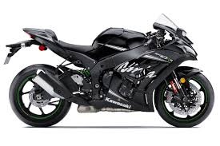
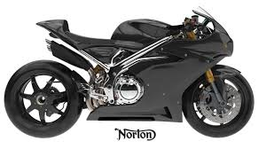
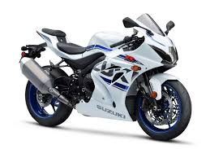
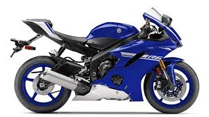
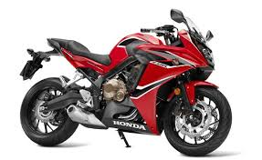

Top 5 Manufacturers:
5. Kawasaki - 42 wins.

Kawasaki made its first showing in the 1960s.
4. Norton - 94 wins.

Norton won the very first TT back in 1907.
3. Suzuki - 107 wins.

Suzuki went through a very strong patch in the 2000s, but have been having a dry spell since 2008.
2. Yamaha - 232 wins.

Yamaha can claim to have had more podium finishes than anyone else with 762 to its name. They have crossed the finish line 9627 times.
1. Honda - 255 wins.

Honda was the first Japanese manufacturer to make a serious effort at the TT, they were eyed with scepticism when they turned up to the 1958. By 1961 it was a winner.